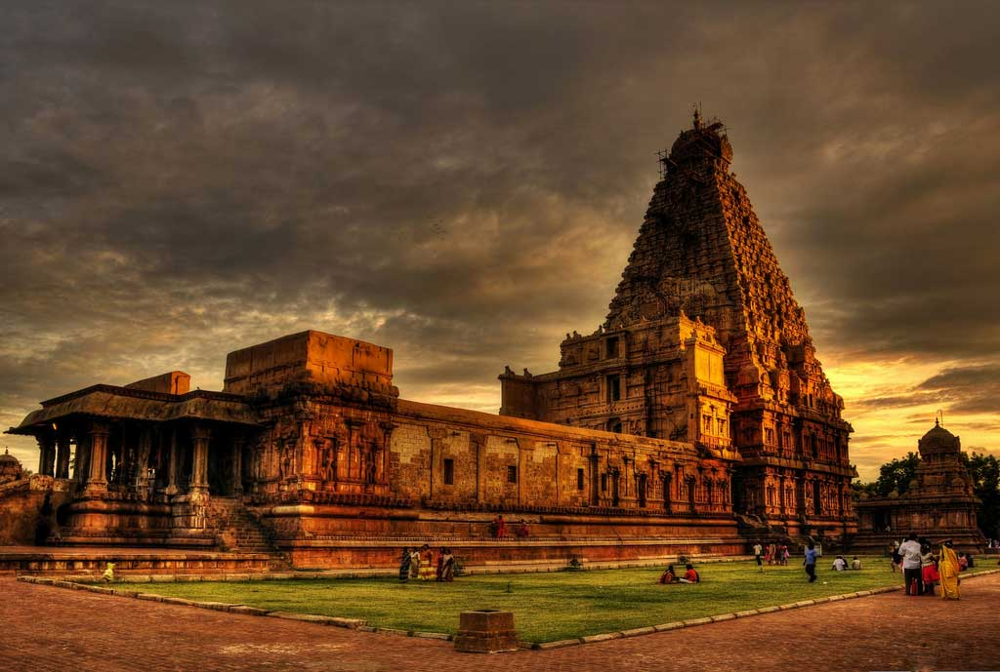

1.Brihadishvara Temple,Tamil Nadu
Brihadishvara Temple, called Rajarajesvaram ('Lord of Rajaraja') by its builder, and known locally as Thanjai Periya Kovil ('Thanjavur Big Temple') and Peruvudaiyar Kovil, is a Shaivite Hindu temple built in a Chola architectural style located on the south bank of the Cauvery river in Thanjavur, Tamil Nadu, India.It is one of the largest Hindu temples and an exemplar of Tamil architecture. It is also called Dakshina Meru (Meru of the South) Built by Chola emperor Rajaraja I between 1003 and 1010 CE, the temple is a part of the UNESCO World Heritage
2.Taj Mahal

The Taj Mahal ('Crown of the Palace') is an ivory-white marble mausoleum on the right bank of the river Yamuna in Agra, Uttar Pradesh, India. It was commissioned in 1631 by the fifth Mughal emperor, Shah Jahan to house the tomb of his favourite wife, Mumtaz Mahal; it also houses the tomb of Shah Jahan himself. The tomb is the centrepiece of a 17-hectare (42-acre) complex, which includes a mosque and a guest house, and is set in formal gardens bounded on three sides by a crenellated wall.
3.Red Fort,Delhi

The Red Fort or Lal Qila is a historic fort in the Old Delhi neighbourhood of Delhi, India, that historically served as the main residence of the Mughal emperors. Emperor Shah Jahan commissioned construction of the Red Fort on 12th May 1638, when he decided to shift his capital from Agra to Delhi. Originally red and white, its design is credited to architect Ustad Ahmad Lahori, who also constructed the Taj Mahal. The fort represents the peak in Mughal architecture under Shah Jahan and combines Persianate palace architecture with Indian traditions.
4.Victoria Memorial,Kolkata

The Victoria Memorial is a large marble building on the Maidan in Central Kolkata, having its entrance on the Queen's Way. It was built between 1906 and 1921 by the British government. It is dedicated to the memory of Queen Victoria, Empress of India from 1876 to 1901. It is the largest monument to a monarch anywhere in the world, it stands in 64 acres of gardens and is now a museum under the control of the Ministry of Culture.Possessing prominent features of the British architecture of the colonial era, it has evolved into one of the most popular places in the city.
5.Qutub Minar
The Qutb Minar, also spelled Qutub Minar and Qutab Minar, is a minaret and "victory tower" that forms part of the Qutb complex, which lies at the site of Delhi’s oldest fortified city, Lal Kot, founded by the Tomar Rajputs.It is a UNESCO World Heritage Site in the Mehrauli area of South Delhi, India.It is one of the most visited tourist spots in the city, mostly built between 1199 and 1220. It can be compared to the 62-metre all-brick Minaret of Jam in Afghanistan, of c. 1190, which was constructed a decade or so before the probable start of the Delhi tower.The surfaces of both are elaborately decorated with inscriptions and geometric patterns. The Qutb Minar has a shaft that is fluted with "superb stalactite bracketing under the balconies" at the top of each stage. In general, minarets were slow to be used in India and are often detached from the main mosque where they exist.